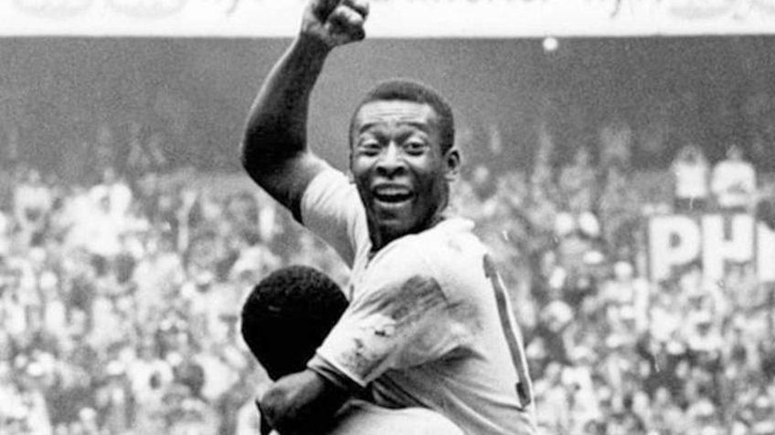

O Santos Futebol Clube foi fundado em 14 de abril de 1912, na cidade de Santos, por Francisco Raymundo Marques, Mário Ferraz de Campos e Argemiro de Souza Júnior. Inicialmente, as cores do clube eram azul, branco e dourado, mas logo foram substituídas pelo preto e branco, que são as cores atuais.
O Santos Futebol Clube é conhecido por revelar grandes jogadores ao longo de sua história. Algumas das maiores revelações do clube incluem: Pelé, Neymar, Robinho, Rodrygo, Gabigol e Marcos Leonardo. Além desses, o clube também revelou nomes como Coutinho, Pepe, Edu, e Clodoaldo, entre muitos outros.
Pelé, também conhecido como o Rei do Futebol, teve uma trajetória lendária no Santos Futebol Clube. Ele chegou ao clube aos 15 anos e, em sua primeira partida oficial, marcou dois gols na vitória por 7 a 1 sobre o Corinthians. Pelé atuou pelo Santos por 18 anos, conquistando inúmeros títulos, incluindo dois Mundiais Interclubes (1962 e 1963) e dois da Libertadores (1962 e 1963). Sua habilidade e faro de gol eram lendários, marcando um total de 1.091 gols pelo Santos. Ele se despediu do clube em 1974, em um jogo emocionante na Vila Belmiro, deixando um legado eterno para o Santos e o futebol mundial.
A capacidade atual da Vila Belmiro é de aproximadamente 16.000 pessoas. No entanto, o Santos FC está planejando construir uma nova arena no local, com capacidade para 30.108 torcedores, que será chamada de "Nova Vila Belmiro"